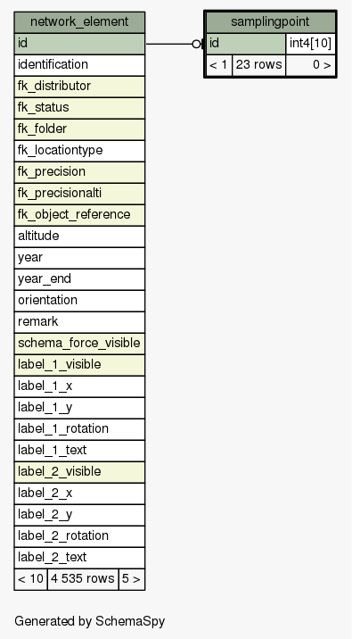
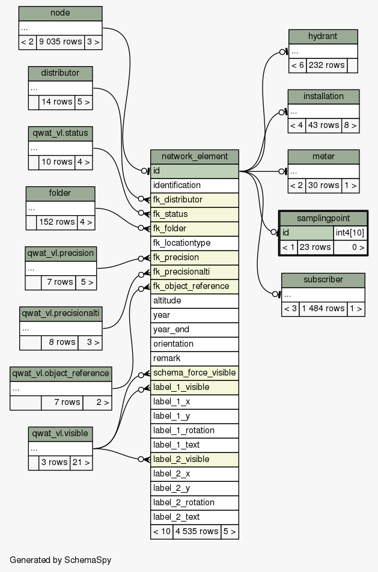

| Table qwat.qwat_od.samplingpoint Table for sampling points. Inherits from node.
|
Generated by SchemaSpy |
| ||||||||||||||||||||
Table contained 23 rows at mar. mars 21 17:52 CET 2017 | ||||||||||||||||||||
Indexes:
| Column(s) | Type | Sort | Constraint Name |
|---|---|---|---|
| id | Primary key | Asc | samplingpoint_pkey |
|
  |